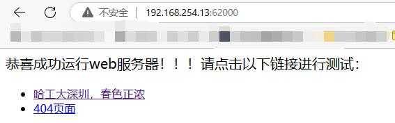
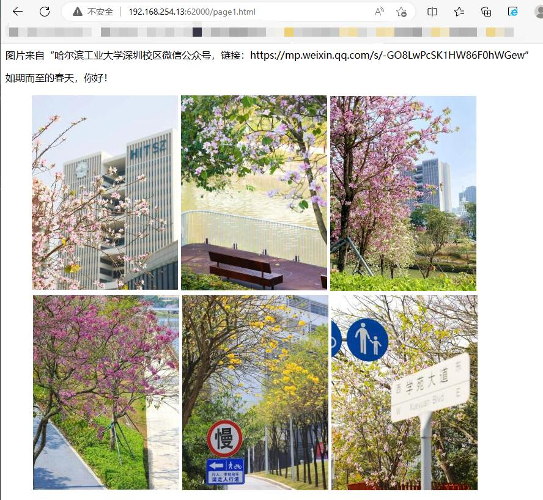
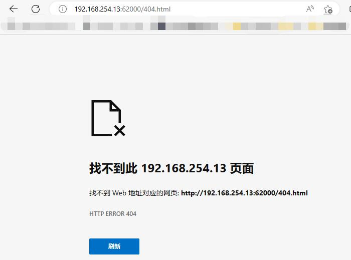

搭建Web服务器
在完成本实验所有实验要求，实验分加0.5分（不会超过20分满分）。
如果你已经在net-lab工程上实现了TCP协议，是不是觉得我们其实还可以更进一步：）
是的，可以在属于我们自己的TCP/IP协议栈上构建出更多有趣的应用层协议，比如实现http协议，搭建Web服务器。
实验自测
为了完成一个基本的Web服务器实验自测，我们需要确保服务器能够：
正确地显示文本内容（如HTML页面）。
正确地显示图片。
当请求的资源不存在时，显示“404页面”。
以下是一个简单的测试示例供同学们参考。
运行net-lab，在浏览器输入地址：http://192.168.254.13:62000/（ 该目标IP地址需要改成你自己代码中config.h中定义的IP地址 ，关于目标IP地址的定义可参考 Windows开发环境搭建），冒号后面的62000代表端口号。

点击“哈工大深圳，春色正浓”

返回主页，再点击“404页面”


实验提交
请提交实验报告和代码。
实验报告需要给出设计方案、实验结果及分析。
注意：本实验需要分析tcp协议和http协议的交互过程。